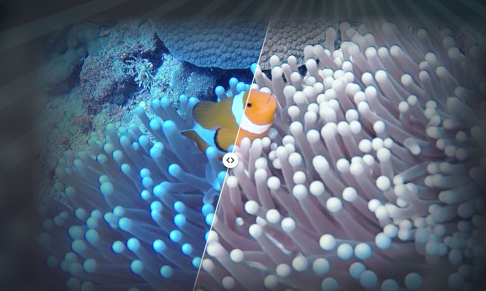

UnderBlue › 수중 사진·영상 가이드
파랗고 초록빛인 수중 사진 보정하는 법

수중 사진은 대부분 파랗거나 초록빛으로 나옵니다. 정상입니다. 물이 카메라에 닿기 전에 빛을 바꾸기 때문입니다.
이 가이드는 왜 그런지, 그리고 다이빙 중과 후에 어떻게 보정하는지 설명합니다.
사진이 파랗거나 초록빛이 되는 이유
물은 빨간빛을 가장 먼저 흡수하고, 그다음 주황과 노랑을 흡수합니다. 파란빛과 초록빛은 더 멀리 갑니다. 그래서 깊이 들어갈수록, 피사체가 카메라에서 멀수록 사진이 더 파랗게 나옵니다.
초록빛 물에는 플랑크톤이나 조류가 있는 경우가 많습니다. 이 때문에 초록빛이 더 강해지고 사진이 흐려집니다.
물속의 작은 입자는 빛을 렌즈 쪽으로 되돌려 보내기도 합니다. 사진에는 뿌연 막이나 흰 점으로 나타나며, 후방 산란(백스캐터)이라고 합니다.
다이빙 중: 색을 더 남기세요
- 가까이 다가가세요. 렌즈와 피사체 사이의 물이 적을수록 색이 많이 남습니다.
- 가능하면 얕은 물에서 찍으세요. 수면 근처에 빨간빛이 더 많습니다.
- 맑은 날에는 해를 등지고 찍으세요.
- 가까운 피사체에는 조명이나 스트로브를 쓰세요. 정면이 아니라 옆쪽으로 비추면 후방 산란이 줄어듭니다.
- 얕은 파란 물에서는 휴대폰이나 액션 카메라에 레드 필터를 쓰면 도움이 될 수 있습니다.
다이빙 후: 색 보정하기
대부분의 사진 편집 앱에서 파랗거나 초록빛인 색조를 보정할 수 있습니다. 다음 순서로 작업하세요.
- 먼저 화이트 밸런스를 맞추세요. 모래나 탱크처럼 흰색이나 회색이어야 하는 곳에 스포이트를 대세요.
- 그래도 파랗다면 따뜻한 색을 더하세요. 그래도 초록빛이라면 마젠타를 더하세요.
- 대비를 조금 높이세요. 물 때문에 사진이 밋밋해집니다.
- 채도는 마지막에, 아주 조금만 올리세요. 너무 올리면 피부와 산호가 가짜처럼 보입니다.
- 카메라가 지원하면 RAW로 찍으세요. RAW에는 보정에 쓸 색 정보가 더 많이 들어 있습니다.
더 빠른 방법: 앱으로 보정하기
직접 편집해도 되지만 사진마다 시간이 걸립니다. 색보정 앱은 한 번에 처리합니다.
UnderBlue에서는 사진이나 영상을 고르고, 효과를 선택해 원본과 비교합니다. 강도를 조절하거나 ‘사용자’ 효과의 슬라이더로 색을 다듬을 수 있습니다. Mac에서는 다이빙 한 번 분량을 한 번에 보정할 수 있습니다.
완전히 보정할 수 없는 사진
어떤 사진은 너무 많이 손상되어 있습니다. 탁한 물에서 피사체가 멀리 있었다면 빨간빛이 거의 사라진 상태입니다. 편집기나 앱으로 나아지게 할 수는 있지만, 가까이서 찍은 사진처럼 만들 수는 없습니다. 다음에는 더 가까이 다가가세요.
UnderBlue로 쉽게 보정하세요
파랗게 나온 사진도 버리지 마세요. 내 다이빙 사진으로 UnderBlue를 써 보세요.
UnderBlue는 iPhone에서 수중 사진과 영상의 자연스러운 색을 되살립니다. 효과를 고르고 원본과 비교한 뒤 저장하면 끝입니다. 모든 처리는 iPhone 안에서 이루어지며, 계정이나 업로드가 필요 없습니다. 무료로 써 볼 수 있습니다.

